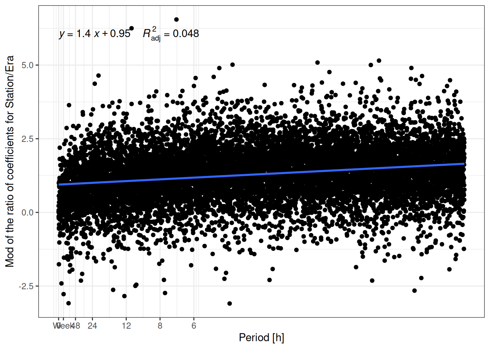

We retrieved macroclimatic data from ERA5-Land (Muñoz-Sabater et al., 2021) at both Paracou and at the nearest weather station from Kourou space center (CSG).
We computed back the correction of Hes et al. (2025) (see section 2 in SI) to determine a and b such \(T_{ec} = \frac{T_e-b}{a}\) in order to correct ERA5-Land with Meteo France weather station data from Kourou CSG at hourly time step.
The temperature relationship between the hourly temperature at the weather station and the hourly temperature at ERA5-Land, as well as the correction factors a and b, following Hes et al. (2025)..
The result differ from Hes et al. (2025) where \(a=0.65\) and \(b=8.72\). ⚠️ this correction as a strong effect on the resulting microclimatic buffer.
However the result is good to remove hour bias but increases bias at monthly and yearly timesteps.
Code
g_month <- weather %>%mutate(tas_era_cor = (tas_era-b)/a) %>%gather(type, tas, -loc, -lon, -lat, -time) %>%group_by(type, month =month(time)) %>%summarise(tas =mean(tas)) %>%ggplot(aes(month, tas, col = type)) +geom_rect(xmin =8, xmax =12, group =NA, col =NA,ymin =-Inf, ymax =Inf, alpha =0.5, fill ="#fff4e0") +geom_line() +theme_bw() +theme(axis.title =element_blank(),legend.position ="bottom") +scale_x_continuous(breaks =1:12,labels =c("J", "F", "M", "A", "M", "J", "J", "A","S", "O", "N", "D"))g_day <- weather %>%mutate(tas_era_cor = (tas_era-b)/a) %>%gather(type, tas, -loc, -lon, -lat, -time) %>%group_by(type, minute =minute(time)+60*hour(time)) %>%summarise(tas =mean(tas)) %>%ggplot(aes(minute/60, tas, col = type)) +geom_line() +theme_bw() +theme(axis.title =element_blank(),legend.position ="bottom")cowplot::plot_grid(g_month, g_day)
MeteoFrance and ERA5-Land raw temperature data for Kourou CSG.
Debiaising Fourier - CSG
The problem with the debiasing of Hes et al. (2025) is that it depends on the time-frequency used. We therefore also attempted debiasing using the relationship between the Fourier coefficients after decomposition. We will use the full time series for the Fourier transform, but missing data cannot be allowed for. Our focus will be on the microclimate study years of 2023 and 2024. The weather station data only miss nine measurements on six different days; we will therefore simply fill these in using local linear interpolation. This gives us 365 and 366 days, multiplied by 24 hours (as 2024 is a leap year). This produced a very large power spectrum over two years, with most power at periods of 0, 24 hours, 12 hours and their harmonics, as well as between periods of two years and one day. Looking at the ratio of power between ERA and the weather station, we can see that, as the frequency increases, the ERA power is smaller than that observed. This is logical given that a reanalysis is expected to smooth out small temporal variations. Nonetheless, even at low frequencies and long periods above the day (24-hour period), the power of the weather station tends to be higher than the power of the ERA5-Land reanalysis. We can use this computed ratio for the Kourou CSG station to interpolate the debiased ERA5-Land back at the Paracou station for the years 2023 and 2024.
Power spectrums across 1-year for ERA5-Land and MeteoFrance temperature data from Kourou CSG.
Code
ratios <- fc %>%mutate(mode =Mod(fft_coefficient(amplitude, phase))) %>%select(-power, -amplitude, -phase) %>%pivot_wider(names_from = source, values_from = mode) %>%mutate(ratio = station/era)ratios %>%ggplot(aes(frequency, log(ratio))) +geom_point() +theme_bw() +scale_x_continuous(breaks =c(0, 1/(7*24), 1/48, 1/24, 1/12, 1/8, 1/6),labels =c("0", "Week", "48", "24", "12", "8", "6") ) +xlab("Period [h]") +ylab("Mod of the ratio of coefficients for Station/Era") +geom_smooth(method ="lm", se =FALSE) + ggpubr::stat_regline_equation(aes(label =paste(..eq.label.., ..adj.rr.label.., sep ="~~~~")) )

Power spectrums ratios across 1-year for ERA5-Land and MeteoFrance temperature data from Kourou CSG.
Debiaising Fourier - Paracou
Using adjustment values between Fourier coefficients of the weather station and ERA5-Land we can then de-bias ERA5-Land at the Paracou station. This resulted in higher predicted variation of temperature than the one smoothed by ERA5-Land reanalysis. However note that the extremes might be a bit exaggerated.
Code
era <-read_tsv("data/raw_data/macro/era5.tsv") %>%filter(time >=as_datetime("2023-04-01 00:00:00")) %>%filter(time <=as_datetime("2025-09-30 23:00:00")) %>%select(-lon, -lat)fc_cor <-fft_tab(era$tas, 24*duration) %>%left_join(select(ratios, frequency, period, ratio)) %>%mutate(coefficient_c =fft_coefficient(amplitude, phase)*ratio)era$tas_corf <-fft_reconstruct(coefficients = fc_cor$coefficient_c,frequencies = fc_cor$frequency[-1], times = (1:(24*duration))-1)era %>%filter(time <as_datetime("2023-04-07 23:00:00")) %>%gather(source, tas, -time) %>%mutate(source =recode(source,"tas"="station","tas_corf"="Fourier" )) %>%ggplot(aes(x = time, y = tas, col = source)) +geom_line() +theme_bw() +xlab("") +ylab("Temperature [°C]")
Interestingly, we find almost back the debaising of Hes et al. (2025) with huorly variation but now the monthly variations are not exaggerated as in Hes et al. (2025), which confirm the interest of the approach for a debiasing at multiple time frequencies.
Code
era <-read_tsv("data/raw_data/macro/era5.tsv") %>%filter(time >=as_datetime("2023-04-01 00:00:00")) %>%filter(time <=as_datetime("2025-09-30 23:00:00")) %>%mutate(tas_cor = (tas-b)/a) %>%rename(raw = tas, hes2025 = tas_cor) era$Fourier <-fft_reconstruct(coefficients = fc_cor$coefficient_c,frequencies = fc_cor$frequency[-1], times = (1:(24*duration))-1)era <- era %>%gather(type, tas, -time, -lon, -lat)write_tsv(era, "data/derived_data/era5_cor.tsv")g_month <- era %>%group_by(type, month =month(time)) %>%summarise(tas =mean(tas)) %>%ggplot(aes(month, tas, col = type)) +geom_rect(xmin =8, xmax =12, group =NA, col =NA,ymin =-Inf, ymax =Inf, alpha =0.5, fill ="#fff4e0") +geom_line() +theme_bw() +theme(axis.title =element_blank()) +scale_x_continuous(breaks =1:12,labels =c("J", "F", "M", "A", "M", "J", "J", "A","S", "O", "N", "D"))g_day <- era %>%group_by(type, minute =minute(time)+60*hour(time)) %>%summarise(tas =mean(tas)) %>%ggplot(aes(minute/60, tas, col = type)) +geom_line() +theme_bw() +theme(axis.title =element_blank())cowplot::plot_grid(g_month, g_day, nrow =2)
ERA5-Land raw and debiased temperature data for Paracou.